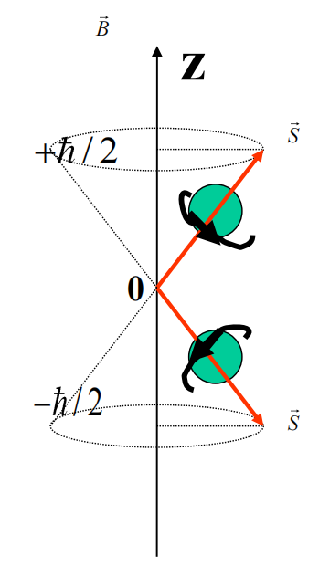

电子不是一个质点，不是一个只具有坐标空间的三个自由度的粒子，而是还具有一个内禀自由度——”自旋“，相应地有自旋角动量和自旋磁矩。
电子自旋角动量 S 的大小为
∣S∣=s(s+1)ℏ
其中 s 为自旋量子数。
电子自旋角动量在空间相对外磁场方向的取向也是空间量子化的，在 z 方向的投影只能取两个值
Sz=±2ℏ
电子在外磁场中的两种自旋运动状态常用下图形象化地描述

应当注意的是，电子的自旋运动是一种内部“固有的”运动，而不是真正的在旋转，没有经典中的对应量。
要对电子的状态做出完全的描述，要同时考虑电子的空间坐标和自旋状态，对于自旋状态，更确切地说是要考虑在某给定方向（如 z 轴方向）的投影的两个可能取值的波幅，即波函数中还应包含自旋投影这个变量（习惯上取为 sz ），记为 ψ(r,sz) ，其中 sz 只能取 ±2ℏ 两个离散值，因此可以用二分量波函数方便地表示
ψ(r,sz)=[ψ(r,+ℏ/2)ψ(r,−ℏ/2)]
称为旋量(spinor)波函数。
其中 ∣ψ(r,ℏ/2)∣2 是电子自旋向上（ sz=ℏ/2 ），而且位置在 r 处的概率密度； ∣ψ(r,−ℏ/2)∣2 是电子自旋向下（ sz=−ℏ/2 ），而且位置在 r 处的概率密度。
归一化条件表示为
sz=±ℏ/2∑∫d3r∣ψ(r,sz)∣2 =∫d3r[ψ∗(r,+ℏ/2)ψ∗(r,−ℏ/2)][ψ(r,+ℏ/2)ψ(r,−ℏ/2)] =∫d3r(∣ψ(r,+2ℏ)∣2+∣ψ(r,−2ℏ)∣2) =∫d3rψ+ψ=1
空间概率密度
ρ(r,sz)=ψ+ψ=∣ψ(r,ℏ/2)∣2+∣ψ(r,−ℏ/2)∣2
自旋状态的概率
P(+2ℏ)=∫∣ψ(r,+2ℏ)∣2 dτ P(−2ℏ)=∫∣ψ(r,−2ℏ)∣2 dτ
一般情况下，自旋运动和轨道运动有相互作用，这时有
ψ(r,+ℏ/2)=ψ(r,−ℏ/2)
当自旋和轨道相互作用小到可以忽略时（即特殊的二分量波函数是自旋和轨道非耦合的状态）， ψ(r,+ℏ/2),ψ(r,−ℏ/2) 对 r 的
依赖关系是一样的，此时波函数可以分量变量，即
ψ(r,sz)=ϕ(r)χ(sz)
其中 χ(sz) 是自旋波函数，其一般形式为
χ(sz)=[ab]
式中 ∣a∣2 与 ∣b∣2 分别代表电子 sz=±ℏ/2 的概率，所以归一化条件表示为
∣a∣2+∣b∣2=χ+χ=[a∗b∗][ab]=1
S^=S^xex+S^yey+S^zez S^2=S^x2+S^y2+S^z2
自旋算符 S^ 具有角动量算符的特征，即 S^×S^=iℏS^ 。
S^×S^=iℏS^⎩⎨⎧[S^x,S^y]=iℏS^z[S^y,S^z]=iℏS^x[S^z,S^x]=iℏS^y
[S^2,S^x]=[S^2,S^y]=[S^2,S^z]=0
{S^2,S^z} 的共同本征态为 ∣sm⟩ ，满足
S^2 ∣sm⟩=s(s+1)ℏ2 ∣sm⟩S^z ∣sm⟩=mℏ ∣sm⟩
其中 s=0,21,1,23,⋯ ， m=−s,−s+1,⋯,s−1,s 。
对于电子， s=21 ，即 S 在空间任意方向上的投影只能取两个数值 ±2ℏ ，故 S^x,S^y,S^z 的本征值均为 ±2ℏ 。
此时在 {S^2,S^z} 表象下，共同本征态为 ∣21,±21⟩ ，简记为 ∣±⟩ ，满足
S^2 ∣±⟩=43ℏ2 ∣±⟩ S^z ∣±⟩=±21ℏ ∣±⟩
为了使自旋算符单位化、无量纲化，引入Pauli算符 σ^ ，满足
S^=2ℏσ^
Pauli算符的分量算符本征值均为 ±1 ，故
σ^x2=σ^y2=σ^z2=I
Pauli算符是厄米算符，即 σ^+=σ^ 。
[σ^2,σ^x]=[σ^2,σ^y]=[σ^2,σ^z]=0
σ^×σ^=2iσ^⎩⎨⎧[σ^x,σ^y]=2iσ^z[σ^y,σ^z]=2iσ^x[σ^z,σ^x]=2iσ^y
将 σ^x2=σ^y2=σ^z2=I 与上式联立，可得 σ^ 的三个分量彼此反对易，即
⎩⎨⎧σ^xσ^y+σ^yσ^x=0σ^yσ^z+σ^zσ^y=0σ^zσ^x+σ^xσ^z=0
进一步可得
⎩⎨⎧σxσy=−σyσx=iσzσyσz=−σzσy=iσxσzσx=−σxσz=iσy
这组式子可归纳为
σασβ=δαβ+iγ∑εαβγσγ
该式与 σ^+=σ^ 概括了Pauli算符的全部代数性质。
在 {S^2,S^z} （或 {σ^2,σ^z} ）表象下，Pauli算符的表示称为Pauli矩阵：
σ^x=[0110]σ^y=[0i−i0]σ^z=[100−1]
Pauli矩阵是厄米、自逆、零迹的。
在 {σ^2,σ^z} 表象下， σ^z 为对角矩阵，对角元为本征值 ±1 ，故
σ^z=[100−1]
设
σ^x=[acbd]
根据 σzσx=−σxσz ，可得
[acbd][100−1]=−[100−1][acbd]⇓[ac−b−d]=[−ac−bd]⇓a=d=0
再根据厄米性 σ^+=σ^ ，可得 c=b∗ ，故
σ^x=[0b∗b0]
最后，根据 σ^x2=I ，得
σ^x2=[0b∗b0][0b∗b0]=[∣b∣200∣b∣2]=I
故 ∣b∣=1 ，则 b=eiδ ，习惯上选择 δ=0 ，即 b=1 ，则
σ^x=[0110]
根据 σzσx=iσy ，可得
σ^y=−iσzσx=−i[100−1][0110]=[0i−i0]
实验发现电子自旋磁矩等于一个玻尔磁子，即
∣μz∣=μB=2meeℏ
定义电子自旋磁矩算符为
μ^s=−2ℏμBS^=−meeS^
在 z 方向的分量作用于自旋的本征态可得
μ^sz∣±⟩=−2ℏμBS^z∣±⟩=−2ℏμB(±2ℏ)∣±⟩=∓μB∣±⟩
轨道磁矩
μ^l=glℏμBL^
自旋磁矩
μ^s=gsℏμBS^
其中旋磁比
gl=−1,gs=−2
电子磁矩与外磁场的相互作用能
W=−(μ^l+μ^s)⋅B
若外磁场 B=B0ez ，则
W=−(μ^l+μ^s)⋅B=ℏμBB0(L^z+2S^z)
若矢量算符 J^ 满足以下对易关系
J^×J^=iℏJ^⎩⎨⎧[J^x,J^y]=iℏJ^z[J^y,J^z]=iℏJ^x[J^z,J^x]=iℏJ^y
则称 J^ 为角动量算符，定义角动量平方算符
J^2=J^x2+J^y2+J^z2
其满足
[J^2,J^α]=0(α=x,y,z)
定义角动量的升降算符
J^±=J^x±iJ^y
其中 J^+ 称为升算符(raising operator)， J^− 称为降算符(lowering operator)。
升降算符不是厄米算符，其满足
J^±+=J^∓
以下只给出结论，证明从略。
[J^+,J^−]=2ℏJ^z
[J^x,J^±]=∓ℏJ^z [J^y,J^±]=−iℏJ^z [J^z,J^±]=±ℏJ^±
[J^2,J^±]=0
J^x=21(J^++J^−)J^y=2i1(J^+−J^−)
对于任意类型的角动量（如轨道角动量、自旋角动量、总角动量等），本征值谱为
J^2 ∣jm⟩=j(j+1)ℏ2 ∣jm⟩ J^z ∣jm⟩=mℏ ∣jm⟩
其中量子数
j=0,21,1,23,2,⋯ m=−j,−j+1,⋯,j−1,j
对于轨道角动量
j=l=0,1,2,⋯ m=0,±1,±2,⋯,±j
对于电子自旋角动量
j=21 m=±21
角动量 {J^2,J^z} 的本征值问题为
J^2 ∣λm⟩=λℏ2 ∣λm⟩ J^z ∣λm⟩=mℏ ∣λm⟩
需要求出 λ,m 的可能取值。
首先，根据 [J^2,J^+]=0 ，两边取矩阵元可得
⟨λ′m′∣[J^2,J^+]∣λm⟩=0
结合 J^2 ∣λm⟩=λℏ2 ∣λm⟩ ，可得
⇓⟨λ′m′∣J^2J^+−J^+J^2∣λm⟩=0⇓⟨λ′m′∣J^2J^+∣λm⟩−⟨λ′m′∣J^+J^2∣λm⟩=0⇓λ′ℏ2⟨λ′m′∣J^+∣λm⟩−λℏ2⟨λ′m′∣J^+∣λm⟩=0⇓(λ′−λ)⟨λ′m′∣J^+∣λm⟩=0
当 λ′=λ 时， ⟨λ′m′∣J^+∣λm⟩=0 ，只有当 λ′=λ 时， ⟨λ′m′∣J^+∣λm⟩ 才可能不为零，所以
⟨λ′m′∣J^+∣λm⟩=δλ′λ⟨λm′∣J^+∣λm⟩
由于推导该式子时只用了 [J^2,J^+]=0 这一个额外条件，故该式子对于 +,\hat{J}_x,\hat{J}_y,\hat{J}_zJ^+,J^x,J^y,J^z 也成立。
接下来，根据对易关系 [J^z,J^±]=±ℏJ^± ，两边取矩阵元，结合 J^z ∣λm⟩=mℏ ∣λm⟩ ，可得
⟨λm′∣[J^z,J^±]∣λm⟩=±ℏ⟨λm′∣J^±∣λm⟩⇓⟨λm′∣J^zJ^±−J^±J^z∣λm⟩=±ℏ⟨λm′∣J^±∣λm⟩⇓⟨λm′∣J^zJ^±∣λm⟩−⟨λm′∣J^±J^z∣λm⟩=±ℏ⟨λm′∣J^±∣λm⟩⇓m′ℏ⟨λm′∣J^±∣λm⟩−mℏ⟨λm′∣J^±∣λm⟩=±ℏ⟨λm′∣J^±∣λm⟩⇓(m′−m∓1)⟨λm′∣J^±∣λm⟩=0⇓⟨λ′m′∣J^±∣λm⟩=δλ′λδm′,m±1⟨λ,m±1∣J^±∣λm⟩
这说明算符 J^± 使磁量子数 m 增减 1 ，所以称为升降算符.
然后，根据对易关系 [J^+,J^−]=2ℏJ^z ，两边取矩阵元，可得
⟨λm′∣[J^+,J^−]∣λm⟩=2ℏ⟨λm′∣J^z∣λm⟩⇓⟨λm′∣J^+J^−−J^−J^+∣λm⟩=2mℏ2δm′m⇓⟨λm∣J^+J^−∣λm⟩−⟨λm∣J^−J^+∣λm⟩=2mℏ2⇓m′′∑⟨λm∣J^+∣λm′′⟩⟨λm′′∣J^−∣λm⟩−⟨λm∣J^−∣λm′′⟩⟨λm′′∣J^+∣λm⟩=2mℏ2⇓⟨λm∣J^+∣λ,m−1⟩⟨λ,m−1∣J^−∣λm⟩−⟨λm∣J^−∣λ,m+1⟩⟨λ,m+1∣J^+∣λm⟩=2mℏ2⇓⟨λm∣J^+∣λ,m−1⟩⟨λ,m−1∣J^+∣λm⟩∗−⟨λm∣J^+∣λ,m+1⟩∗⟨λ,m+1∣J^+∣λm⟩=2mℏ2⇓⟨λm∣J^+∣λ,m−1⟩2−⟨λ,m+1∣J^+∣λm⟩2=2mℏ2
令 ξmℏ=⟨λ,m+1∣J^+∣λm⟩=⟨λm∣J^−∣λ,m+1⟩∗ ，则
∣ξm−1∣2−∣ξm∣2=2m
此方程的解为
∣ξm∣2=C−m(m+1)
其中 C 为与 m 无关的实常数。根据 ∣ξm∣2≥0 可知
m(m+1)≤C
这表明量子数 m 的取值要受到一定限制，即 m 有一个上界 m 与下界 m ，在此范围外（即 m>m 或 m<m），应有 ⟨λm∣λm⟩=0 ，故
ξm=ℏ1⟨λ,m+1∣J^+∣λm⟩=ℏ1⟨λ,m+1∣λ,m+1⟩=0
故 C=m(m+1) ，同理有
ξm−1=ℏ1⟨λ,m−1∣J^−∣λm⟩∗=ℏ1⟨λ,m−1∣λ,m−1⟩∗=0
故 C=m(m−1) ，根据两个 C 的表达式，可得
m=−m
由于相邻的两个 m 值相差 1 ，故任意两个 m 的差均为整数，故
m−m=非负整数⇓2m=非负整数⇓m=2非负整数
记 m=j ，则 j 可能取值为 21 的非负整数倍，即
j={21,23,25,⋯0,1,2,⋯(半奇数)(非负整数)
故
∣ξm∣2=C−m(m+1)=m(m+1)−m(m+1)=j(j+1)−m(m+1) =(j−m)(j+m+1)
通过以上推导，已经得出了量子数 j 与 m 的限制关系以及升降算符矩阵元不为零的位置，接下来只需要找到 λ 与 j 的关系，就可以求出 J^2 与 J^z 的本征值了：考虑
J^2=J^x2+J^y2+J^z2 =41(J^++J^−)2−41(J^+−J^−)2+J^z2 =21(J^+J^−+J^−J^+)+J^z2
两边取平均值可得
⟨λm∣J^2∣λm⟩=21⟨λm∣J^+J^−+J^−J^+∣λm⟩+⟨λm∣J^z2∣λm⟩⇓λℏ2=21(⟨λm∣J^+J^−∣λm⟩+⟨λm∣J^−J^+∣λm⟩)+m2ℏ2⇓λℏ2=21m′∑(⟨λm∣J^+∣λm′⟩⟨λm′∣J^−∣λm⟩+⟨λm∣J^−∣λm′⟩⟨λm′∣J^+∣λm⟩)+m2ℏ2⇓λℏ2=21(⟨λm∣J^+∣λ,m−1⟩⟨λ,m−1∣J^−∣λm⟩+⟨λm∣J^−∣λ,m+1⟩⟨λ,m+1∣J^+∣λm⟩)+m2ℏ2⇓λℏ2=2ℏ2(∣ξm−1∣2+∣ξm∣2)+m2ℏ2⇓λ=21[(j−m+1)(j+m)+(j−m)(j+m+1)]+m2⇓λ=j(j+1)
综上，即完成了本征值的求解。
在 {J^2,J^z} 表象中， J^2,J^z 是对角矩阵
⟨j′m′∣J^2∣jm⟩=j(j+1)ℏ2 δjj′δmm′ ⟨j′m′∣J^z∣jm⟩=mℏ δjj′δmm′
其余的角动量相关算符对 j 而言是对角矩阵，而对 m 而言，升降算符只在主对角线一侧的斜线上有非零矩阵元：
⟨j,m+1∣J^+∣jm⟩=ℏj(j+1)−m(m+1) ⟨j,m−1∣J^−∣jm⟩=ℏj(j+1)−m(m−1)
角动量在 x,y 分量的算符只在主对角线两侧的斜线上有非零矩阵元：
⟨j,m+1∣J^x∣jm⟩=2ℏj(j+1)−m(m+1) ⟨j,m−1∣J^x∣jm⟩=2ℏj(j+1)−m(m−1) ⟨j,m+1∣J^y∣jm⟩=−2iℏj(j+1)−m(m+1) ⟨j,m−1∣J^y∣jm⟩=2iℏj(j+1)−m(m−1)
实际上，角动量的升降算符与 x,y 分量算符的矩阵表示均有相位不确定性，即有因子 eiδ ，习惯上取 δ=0 ，即得上述表达式。
设设角动量 J^1 和 J^2 互相独立，即两个角动量的分量是对易的
[J^1α,J^2β]=0(α,β=x,y,z)
则矢量和 J^=J^1+J^2 也是一个角动量算符，称为总角动量，它是厄米算符，且满足角动量的一般对易关系，即
J^×J^=iℏJ^
由于两个角动量 J^1 和 J^2 互相独立，容易证明
[J^12,J^2]=[J^22,J^1]=0
由此容易推得
[J^12,J^]=[J^22,J^]=0 [J^12,J^2]=[J^22,J^2]=0
根据 J^α=J^1α+J^2α 与 [J^1α,J^2α]=0 ，可得
[J^α,J^1α]=[J^α,J^2α]=0(α=x,y,z)
根据 [J^α,J^β]=εαβγiℏJ^γ 以及
J^2=(J^1+J^2)2 =J^12+J^22+2J^1⋅J^2 =J^12+J^22+2(J^1xJ^2x+J^1yJ^2y+J^1zJ^2z)
可得
[J^2,J^1]=0,[J^2,J^2]=0
非耦合表象使用 ψj1m1(1)ψj2m2(2) 为基底，即两个角动量可以独立地考虑，力学量完备集为
{J^12,J^1z,J^22,J^2z}
使用Dirac符号表示基底为
∣j1m1j2m2⟩=∣j1m1⟩∣j2m2⟩
对于确定的 j1,j2 ，可得 m1,m2 具有确定的取值范围，故维数为
(2j1+1)(2j2+1)
封闭关系为
m1=−j1∑j1m2=−j2∑j2∣j1m1j2m2⟩⟨j1m1j2m2∣=I
需要注意的是，在非耦合表象中， J^12,J^1z 只对 ∣j1m1⟩ 作用， J^22,J^2z 只对 ∣j2m2⟩ 作用，故
J^12 ∣j1m1j2m2⟩=j1(j1+1)ℏ2 ∣j1m1j2m2⟩ J^1z ∣j1m1j2m2⟩=m1ℏ ∣j1m1j2m2⟩ J^22 ∣j1m1j2m2⟩=j2(j2+1)ℏ2 ∣j1m1j2m2⟩ J^2z ∣j1m1j2m2⟩=m2ℏ ∣j1m1j2m2⟩
非耦合表象使用 ψj1j2jm(1,2) 为基底，即两个角动量需要综合地考虑，力学量完备集为
{J^12,J^22,J^2,J^z}
使用Dirac符号表示基底为
∣j1j2jm⟩
封闭关系为
j=jmin∑jmaxm=−j∑j∣j1j2jm⟩⟨j1j2jm∣=I
在耦合表象中，算符对态的作用为
J^12 ∣j1j2jm⟩=j1(j1+1)ℏ2 ∣j1j2jm⟩ J^22 ∣j1j2jm⟩=j2(j2+1)ℏ2 ∣j1j2jm⟩ J^2 ∣j1j2jm⟩=j(j+1)ℏ2 ∣j1j2jm⟩ J^z ∣j1j2jm⟩=mℏ ∣j1j2jm⟩
对于确定的 j1,j2 ，在 (2j1+1)(2j2+1) 维子空间中，非耦合表象的基底向耦合表象的基地变换公式为
∣j1j2jm⟩=m1=−j1∑j1m2=−j2∑j2∣j1m1j2m2⟩⟨j1m1j2m2∣j1j2jm⟩
其中的展开系数称为Clebsch-Gordan(CG)系数，记为
Cj1m1j2m2jm=⟨j1m1j2m2∣j1j2jm⟩
总角动量 {J^2,J^z} 的共同本征态为 ∣jm⟩ ，对于确定的量子数 j1,j2 ，总角量子数 j 的取值系列为
j=∣j1−j2∣ , ∣j1−j2∣+1 , ⋯, j1+j2−1 , j1+j2
首先，根据非耦合表象向耦合表象的基底变换，可得
J^z ∣j1j2jm⟩=mℏ ∣j1j2jm⟩=m1=−j1∑j1m2=−j2∑j2mℏ Cj1m1j2m2jm∣j1m1j2m2⟩
而根据 J^z=J^1z+J^2z ，可得
J^z ∣j1j2jm⟩=(J^1z+J^2z)∣j1j2jm⟩ =(J^1z+J^2z)m1=−j1∑j1m2=−j2∑j2Cj1m1j2m2jm∣j1m1j2m2⟩ =m1=−j1∑j1m2=−j2∑j2(m1+m2)ℏ Cj1m1j2m2jm∣j1m1j2m2⟩
两式对比，可得
m1=−j1∑j1m2=−j2∑j2(m−m1−m2)ℏ Cj1m1j2m2jm∣j1m1j2m2⟩=0
由于基矢 ∣j1m1j2m2⟩ 是线性独立的，故所有系数均为零，即
m=m1+m2
考虑到 m1,m2 的取值系列分别为
m1=−j1 , −j1+1 ,⋯, j1−1 , j1m2=−j2 , −j2+1 ,⋯, j2−1 , j2
故可得 m 能取到的最大值为
mmax=(m1+m2)max=j1+j2
而 m 的取值范围为从 −j 到 j ，故
jmax=mmax=j1+j2
值得注意的是 jmin 无法直接通过 m 的可取值范围得到，而是需要根据表象变换空间维数保持不变这一特征来求出，由于当 j 确定时，维数为 2j+1 ，故
j=jmin∑j1+j2(2j+1)=(2j1+1)(2j2+1)⇓21(j1+j2−jmin+1)[(2jmin+1)+(2j1+2j2+1)]=(2j1+1)(2j2+1)⇓(j1+j2−jmin+1)(jmin+j1+j2+1)=(2j1+1)(2j2+1)⇓(j1+j2+1)2−jmin2=(2j1+1)(2j2+1)⇓jmin2=(j1−j2)2⇓jmin=∣j1−j2∣
J^1⋅J^2=21(J^2−J^12−J^22)
两电子体系的自旋自由度为 2 ，可以选择非耦合表象，即 {S^12,S^1z,S^22,S^2z} 作为自旋力学量完全集，也可以选择耦合表象，即 {S^12,S^22,S^2,S^z} 作为自旋力学量完全集。
对于电子，由于 S^12,S^22 的本征值是确定的，均为 43ℏ2 ，故上述力学量完全集中的 S^12,S^22 可略去不写。
在单体近似下，忽略两个电子间的 S−S 耦合，两电子的自旋函数 χ(S1z,S2z) 可以用每个电子自旋函数 χms(Skz) 之积来表示，即
χ(S1z,S2z)=χms(S1z) χms′(S2z)
其中自旋量子数 s1=s2=21 ，自旋磁量子数 ms=±21,ms′=±21 。由此，即可得出无耦合表象的基底
χ(1)=∣↑ ⟩1∣↑ ⟩2=χ1/2(S1z) χ1/2(S2z) χ(2)=∣↓ ⟩1∣↓ ⟩2=χ−1/2(S1z) χ−1/2(S2z) χ(3)=∣↑ ⟩1∣↓ ⟩2=χ1/2(S1z) χ−1/2(S2z) χ(4)=∣↓ ⟩1∣↑ ⟩2=χ−1/2(S1z) χ1/2(S2z)
其中的 ∣↑ ⟩1 表示第一个电子的自旋向上，其余表示依次类推，对于两个电子的自旋态，也可使用诸如 ∣↑ ↑ ⟩12 的形式表述。
在耦合表象中，基底为
χ00=21[ ∣↑ ⟩1∣↓ ⟩2−∣↓ ⟩1∣↑ ⟩2 ] χ10=21[ ∣↑ ⟩1∣↓ ⟩2+∣↓ ⟩1∣↑ ⟩2 ] χ11=∣↑ ⟩1∣↑ ⟩2 χ1,−1=∣↓ ⟩1∣↓ ⟩2
对应的本征值与交换对称性如表所示
| 态 | 交换对称性 | S^2 的本征值 | S^z 的本征值 |
|---|
| χ00 | 反对称 | 0 | 0 |
| χ10 | 对称 | 2ℏ2 | 0 |
| χ11 | 对称 | 2ℏ2 | ℏ |
| χ1,−1 | 对称 | 2ℏ2 | −ℏ |
其中：自旋总量子数 s=1 的态（ χ10,χ11,χ1,−1 ）表示两电子自旋互相平行，对于给定的自旋总量子数是三重简并的，称为自旋三重态；自旋总量子数 s=0 的态（ χ00 ）表示两电子自旋互相反平行，对于给定的自旋总量子数是非简并的，称为自旋单态。
电子为Fermi子，多电子体系的总波函数应该是交换反对称的，故若自旋波函数为交换对称的，则空间波函数当为自旋反对称的，而若自旋波函数为交换反对称的，则空间波函数当为自旋对称的。
在非耦合表象的基底中，可以验证四个态均为 Sz 的本征态，根据 S^z=S^1z+S^2z ，以及
S^kz∣↑ ⟩k=21ℏ ∣↑ ⟩k S^kz∣↓ ⟩k=−21ℏ ∣↓ ⟩k
容易得到
S^z ∣↑ ⟩1∣↑ ⟩2=ℏ ∣↑ ⟩1∣↑ ⟩2 S^z ∣↓ ⟩1∣↓ ⟩2=−ℏ ∣↓ ⟩1∣↓ ⟩2 S^z ∣↑ ⟩1∣↓ ⟩2=0 ∣↑ ⟩1∣↓ ⟩2 S^z ∣↓ ⟩1∣↑ ⟩2=0 ∣↓ ⟩1∣↑ ⟩2
同时，根据
S^2=(S^1+S^2)2 =S^12+S^22+2S^1⋅S^2 =23ℏ2+2(S^1xS^2x+S^1yS^2y+S^1zS^2z)
以及
S^x ∣↑ ⟩=2ℏ[0110][10]=2ℏ[01]=2ℏ ∣↓ ⟩ S^x ∣↓ ⟩=2ℏ[0110][01]=2ℏ[10]=2ℏ ∣↑ ⟩ S^y ∣↑ ⟩=2ℏ[0i−i0][10]=2iℏ[01]=2iℏ ∣↓ ⟩ S^y ∣↓ ⟩=2ℏ[0i−i0][01]=−2iℏ[10]=−2iℏ ∣↑ ⟩
可得 ∣↑ ⟩1∣↑ ⟩2 和 ∣↓ ⟩1∣↓ ⟩2 也是 S^2 的本征态，满足
S^2 ∣↑ ⟩1∣↑ ⟩2=2ℏ2 ∣↑ ⟩1∣↑ ⟩2 S^2 ∣↓ ⟩1∣↓ ⟩2=2ℏ2 ∣↓ ⟩1∣↓ ⟩2
根据对应的本征值（量子数），将这两个态记为 χ11 与 χ1,−1 ，而 ∣↑ ⟩1∣↓ ⟩2 和 ∣↓ ⟩1∣↑ ⟩2 不是 S^2 的本征态，需要通过线性组合构成 S^2 的本征态，可得
S^221[ ∣↑ ⟩1∣↓ ⟩2−∣↓ ⟩1∣↑ ⟩2 ]=0×21[ ∣↑ ⟩1∣↓ ⟩2−∣↓ ⟩1∣↑ ⟩2 ] S^221[ ∣↑ ⟩1∣↓ ⟩2+∣↓ ⟩1∣↑ ⟩2 ]=2ℏ2 21[ ∣↑ ⟩1∣↓ ⟩2+∣↓ ⟩1∣↑ ⟩2 ]
根据对应的本征值（量子数），将这两个态记为 χ00 与 χ10 。